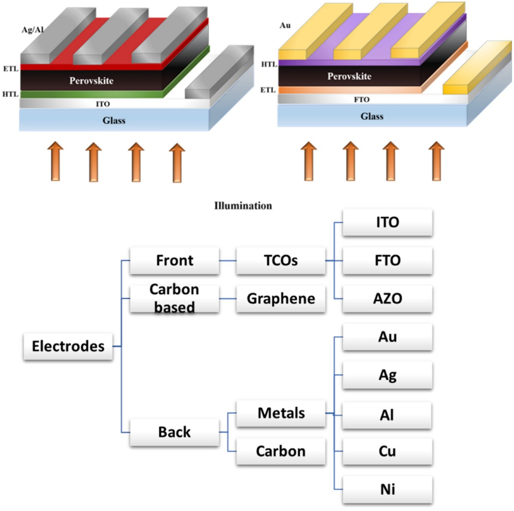
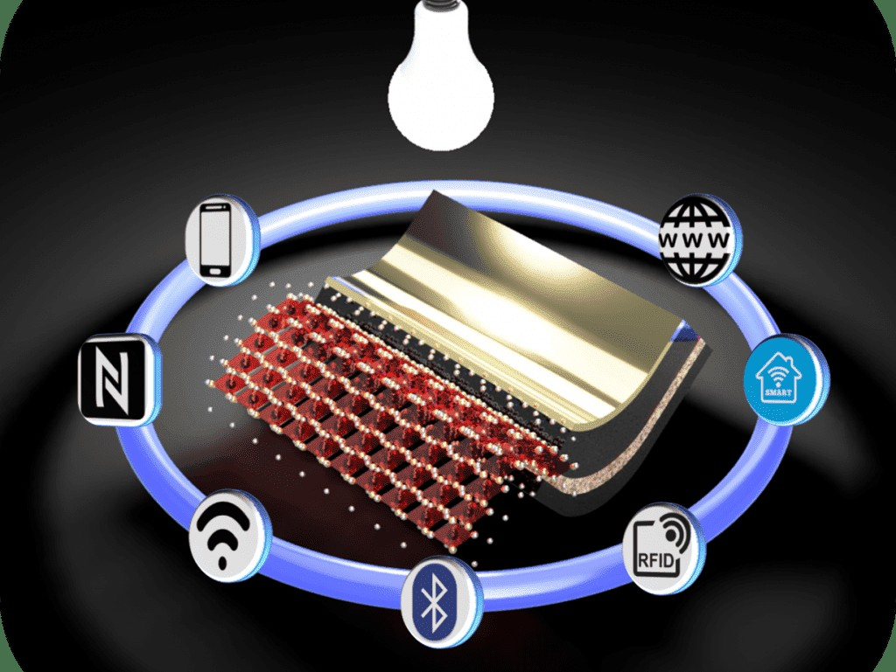
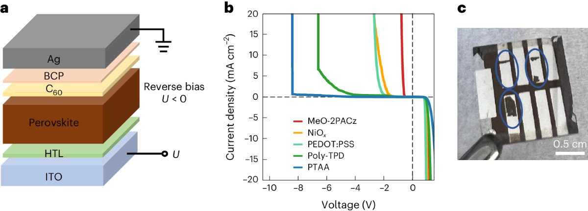
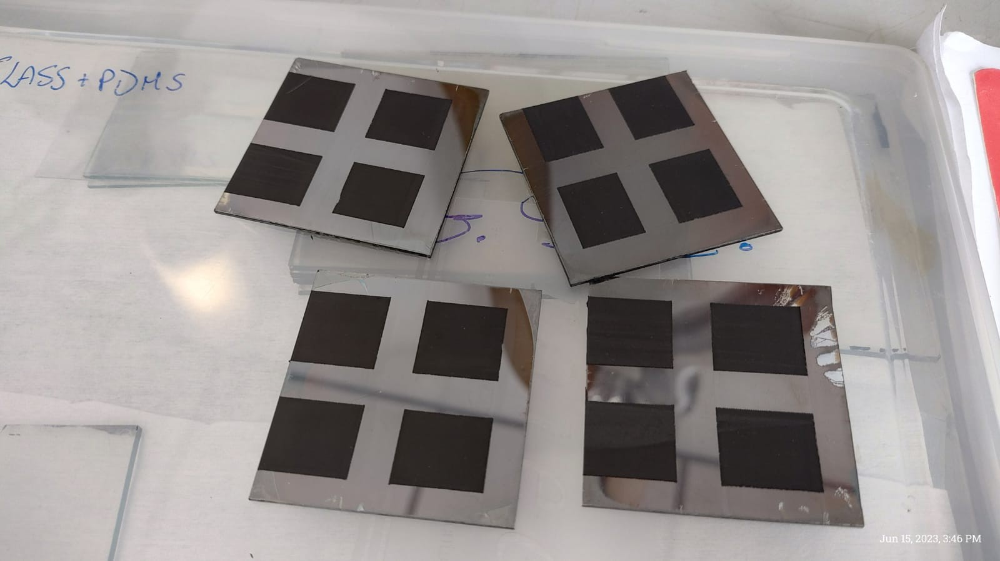
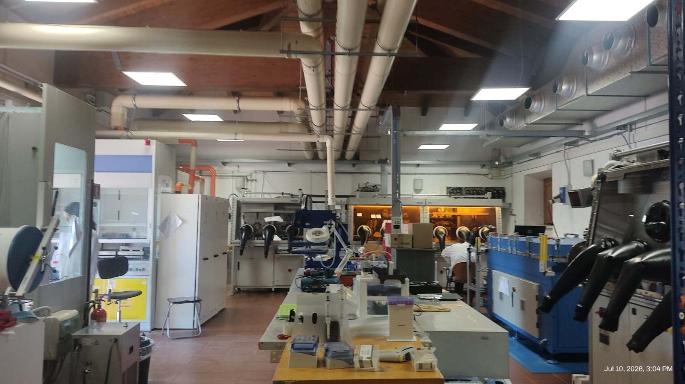

01
Electrode engineering
Carbon, metal, 3D printed molten metal, transparent conductive oxide, and 2D material electrodes.
Industrial PhD researcher in perovskite photovoltaics
My research focuses on electrode engineering for perovskite solar cells, spanning carbon, metals, 3D printed metal, transparent conductive oxide, and 2D material-based electrodes. I investigate how electrode selection influences efficiency, indoor photovoltaic performance, semitransparency, reverse bias stability, and large-area scalability.
Research interests

Carbon, metal, 3D printed molten metal, transparent conductive oxide, and 2D material electrodes.

HTL-free carbon-based perovskite cells and modules for IoT and indoor light harvesting.

Comparing solution-processed and vacuum-processed ETLs in inverted perovskite solar cells.

Blade coating, slot-die coating, spray coating, sputtering, lamination, encapsulation, and module upscaling.
CV and experience
The cards combine CV details with institute logo chips. Hover or focus a card to bring its project theme forward.

University of Rome Tor Vergata, CHOSE, and Homerun Energy / Halocell Europe
Different electrodes for perovskite solar cells, including large-area HTL-free carbon-based devices for IoT and indoor PV.
Institute of Photovoltaics, University of Stuttgart, Germany
Reverse bias stability of fully solution processed vs vacuum processed ETL in inverted perovskite solar cells.
IMO-IMEC, Genk, Belgium
Thermal evaporation of passivation molecules for perovskite solar cells.
Indian Institute of Technology Bombay, India
Bulk passivation in lead-free Cs2AgBiBr6 perovskite solar cells.
Central University of Jharkhand, India
Fabrication and simulation of perovskite solar cells in single and double junction architectures.
Indian Institute of Technology Guwahati, India
Development of flexible dye-sensitized solar cells and electrochromic devices.
Publications
Chemical Engineering Journal, 2026
10.1016/j.cej.2026.177834Solar RRL, 2025. *Equal contribution
10.1002/solr.202400849Sustainable Energy and Fuels, 2025
10.1039/D4SE01222DMaterials Today Energy, 2024
10.1016/j.mtener.2024.101725The Journal of Physical Chemistry C, 2024. *Equal contribution
10.1021/acs.jpcc.3c07468Progress in Materials Science, 2025. *Equal contribution
10.1016/j.pmatsci.2025.101560Energy and Fuels, 2023
10.1021/acs.energyfuels.3c00555Applied Physics A, 2023. *Equal contribution
10.1007/s00339-022-06337-8IEEE Journal of Photovoltaics, 2022. *Equal contribution
10.1109/JPHOTOV.2022.3230147Materials Today Sustainability, 2022. *Equal contribution
10.1016/j.mtsust.2022.100241Solar Energy, 2025
10.1016/j.solener.2025.113311Materials Today: Proceedings, 2022. *Equal contribution
10.1016/j.matpr.2022.07.263Nature Energy, 2026
10.1038/s41560-026-02101-xConference presentations and awards
Use the tabs to switch between presentations and achievements.
Advancing Perovskite-Based Photovoltaics 2025, Stuttgart, Germany.
NIPHO 2025, Sardinia, Italy.
ReteIFV Conference 2024, Bolzano, Italy.
IPVC-1 2024, Tampere, Finland and Carbon Club 2024, online.
Metals and Materials Summit 2022, IIT Bombay, India.
IIT Bombay, 2022.
Scientific Reports, Optical and Quantum Electronics, Interactions, Discover Electronics, and Discover Chemical Engineering.
Qualified with a rank within the top 6% of 93,526 candidates.
Industrial training at Jindal Steel & Power and NPTEL certificates in Solar Photovoltaics and Control Engineering.
Contact
CHOSE, University of Rome Tor Vergata, Casale 11, Via Pietro Gismondi s.n.c., 00133 Roma, Italy.